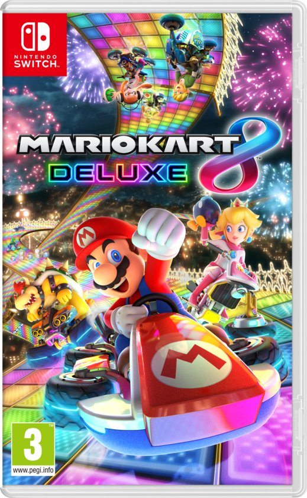
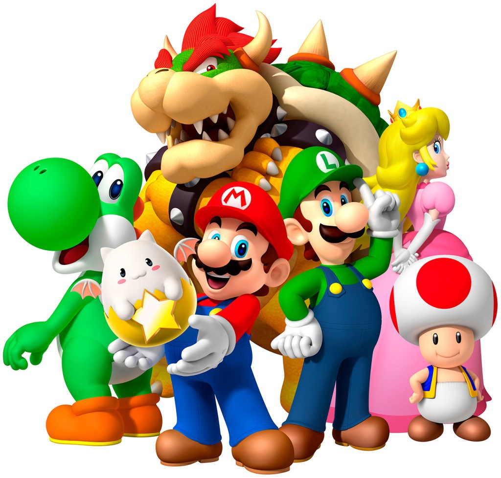
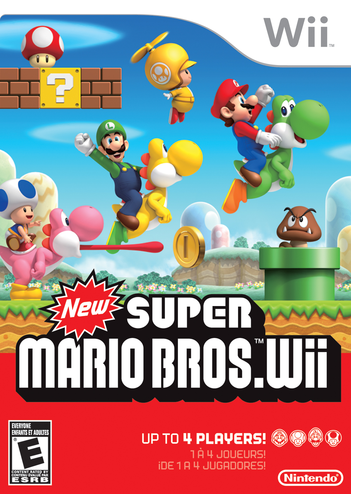

El personaje de Mario surgió del primer juego de Donkey Kong, creación de Shigeru Miyamoto de 1981, que estaba inspirado en el triángulo amoroso de las tiras cómicas y dibujos animados de Popeye, el marino. ... Si el juego de a dos se tornaba aburrido daba la opción de enfrentarse uno a uno a como diera lugar.


